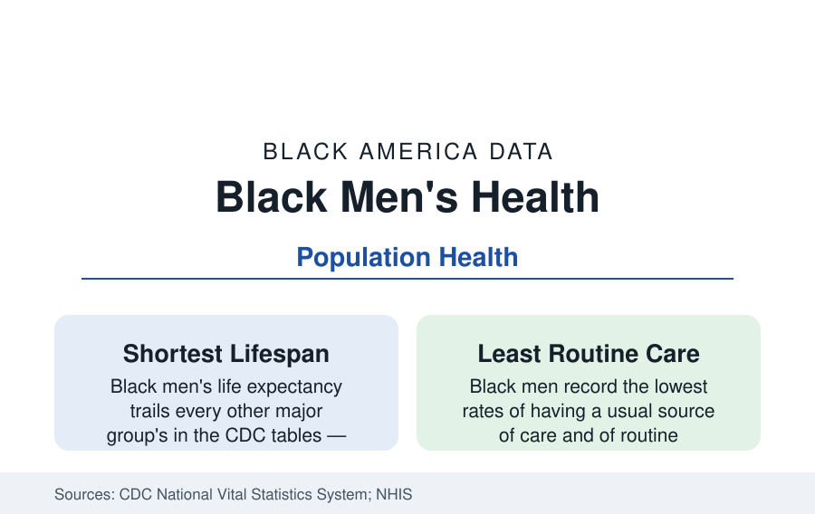

Black Public Health
Black Men's Health: The Mortality File and the Screening Data
Black men have the shortest life expectancy of any major American demographic and the lowest rates of routine care. The vital statistics and screening data.

Every file in this section converges in one population. Black men record the shortest life expectancy of any major American demographic group, the highest midlife mortality from the chronic diseases this tab tracks, and the lowest engagement with the routine care system that prevents them. The men's health data are not one topic among many — they are the summary statistic of all the others. This article reports the mortality and screening file.
The Mortality Ledger by Cause
The vital statistics decompose the expectancy gap into its causes with bookkeeping clarity: heart disease and cancer at the top (Black men's rates the nation's highest or near it, per the heart and cancer files), stroke and diabetes behind them, the unintentional-injury and overdose files of the recent decade, and — the historical shadow — the violence mortality of young men, which this reference does not treat as a topic but whose arithmetic sits inside the young-age mortality tables and inside a generation of prevention work the public health field counts as its own. The age structure is the point: Black male mortality's excess concentrates in the working years, 35 to 64 — the deaths of fathers and earners in their productive decades, each one carrying the household arithmetic of the family data with it. The trend line offers the file's one wide hope: the gap has narrowed substantially across the past three decades (the expectancy profiles' convergence data), driven by cardiovascular mortality's decline and the cancer files' improvements — proof in the trend itself that the ledger responds to the medicine.
Screening and the Usual Source of Care
The engagement data describe the mechanism. Black men are the least likely of any group to have a usual source of care in the NHIS (roughly a quarter to a third report none, the surveys' highest share), the least likely to have seen a doctor in the past year, and their screening rates — colorectal (improving, per that file), blood pressure and cholesterol checks (relatively better, riding pharmacy and workplace measurement), prostate discussions (the PSA shared-decision data), diabetes testing against the highest-risk profile — trace the system's reach into a population it sees mainly in emergency departments and urgent care. The reasons literature is measured, not folklore: access (insurance's male gap — men lose dependent and Medicaid pathways women have; the coverage profile's uninsured rates are male-skewed), occupational time (the employment files' inflexible schedules), medical mistrust with its documented history, and the masculinity norms the survey researchers quantify in delayed care-seeking. The barbershop trials remain the file's emblematic counter-design — meet the population where it already gathers, with the pharmacist in the next chair — and their blood-pressure results are among the strongest intervention effects in the disparities literature.
The Conditions Men Carry Quietly
Several files concentrate here with specific weight. The mental-health profile's male chapter: depression underdiagnosed and suicide rising among young Black men and boys in the recent vital statistics (a trend the field flags with alarm, against the older pattern), with firearm means in the method data and help-seeking rates the lowest in the surveys. Sexual health carries the HIV file's male majority. The musculoskeletal and injury toll of the manual-labor employment files accumulates in men's disability claims (the disability profile's gender split), and the sleep file's apnea is substantially a male diagnosis dying undiagnosed in this population. The oral-health file's worst extraction statistics are men's. Even the vaccination data run a male deficit in most adult series. The composite: a population whose health risks are the section's highest and whose every contact rate with the preventive system is its lowest — the arithmetic of the expectancy table stated as operations.
What Works in the Data
The intervention ledger with evidence: the barbershop and faith-based screening models (the church health ministries' men's programs riding the religion file's infrastructure), the community health worker and patient navigator programs' male enrollment results, workplace-based screening in the unionized and public-sector employment bases (the postal and transit workforces' health programs reach Black men at a scale no clinic matches), the VA system for the veteran cohort (the one integrated system where Black men's outcomes data run closest to parity on several chronic measures — the military profile's health dividend, visible in the VA's own equity reports), and the targeted media and fraternity-based campaigns (the Divine Nine's health programming, the 100 Black Men and fraternity health initiatives) whose reach data the evaluators credit. The policy file — Medicaid expansion's male coverage gains, the preventive-services coverage rules, the primary-care workforce's diversity pipeline (Black men are under three percent of physicians in the workforce file, and the concordance studies measure what that costs this population's trust and uptake) — closes the ledger.
Reading the Men's File
Black men's health is where this section's abstractions come due: the shortest lives, the latest care, the strongest single interventions, the clearest proof that the gap is a system output rather than a fate. The data keep offering the same bargain — bring the screening to the barbershop, the church, and the job, and the mortality table moves. It has moved before, within living memory, by years. The file's demand is only that the system keep the appointment it keeps missing.
More in Black Public Health
Hypertension Among Black Adults: Prevalence, Control, and Consequences
About 55 percent of Black adults have hypertension — the highest rate of any U.S. group. Prevalence, onset, control, and the stroke, heart, and kidney consequences in the data.
Diabetes Among Black Adults: Prevalence and Complications
Nearly one in five Black adults has diabetes, diagnosed or undiagnosed — and its complications fall with particular weight. The CDC data on prevalence, control, and outcomes.
Black Life Expectancy: The Gap at Birth and Its Causes
Black life expectancy at birth is about 73 years, roughly five years below the national figure — the summary measure of every health gap in this section. The CDC data.
Source: Centers for Disease Control and Prevention, National Vital Statistics System; National Health Interview Survey; U.S. Preventive Services Task Force data; Kaiser Family Foundation health analyses.